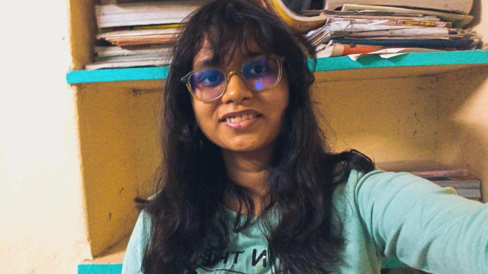

Click to find more
About Me
Hey there! I'm Niharika, a passionate Web Developer, Problem Solver, and UI/UX Enthusiast. I love turning ideas into interactive experiences and solving real-world coding challenges.
What I Love:
- 💻 Web Development
- 🎨 UI/UX Design
- 🧩 Problem Solving
- 🚀 Exploring New Tech
- 🔥 Leetcoder
Projects
Crafty
Designed and developed Crafty, a vibrant web platform showcasing handmade crafts.
View ProjectStopwatch
This project is a lightweight and fully functional stopwatch built with JavaScript. It allows users to start, stop, and reset the timer, providing an intuitive and interactive experience.
View ProjectSite for Marathon
This project is a responsive website developed for an NGO to showcase key details about one of the marathons in London
View ProjectSpin the bottle
Spin The Bottle" is a fun and interactive web application designed to facilitate the random selection of players for games, activities, or any scenario where randomness adds excitement.
View ProjectDrag and Drop game
Developed an interactive drag-and-drop web application, allowing users to seamlessly move container tiles across the interface.
View Project